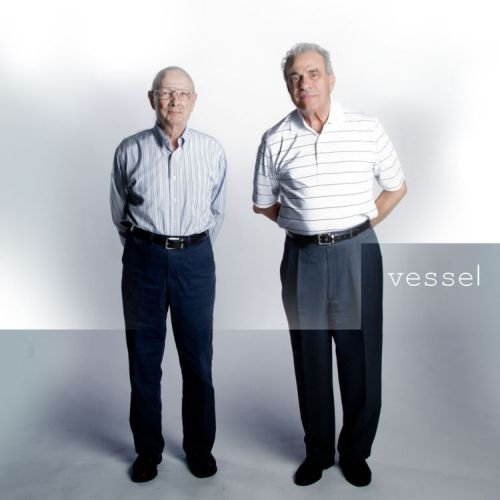
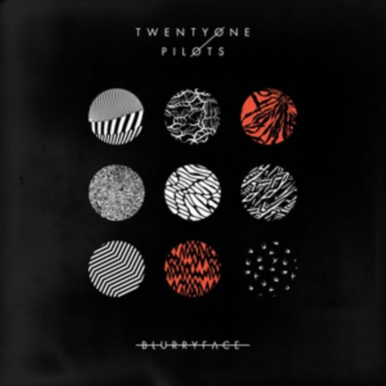
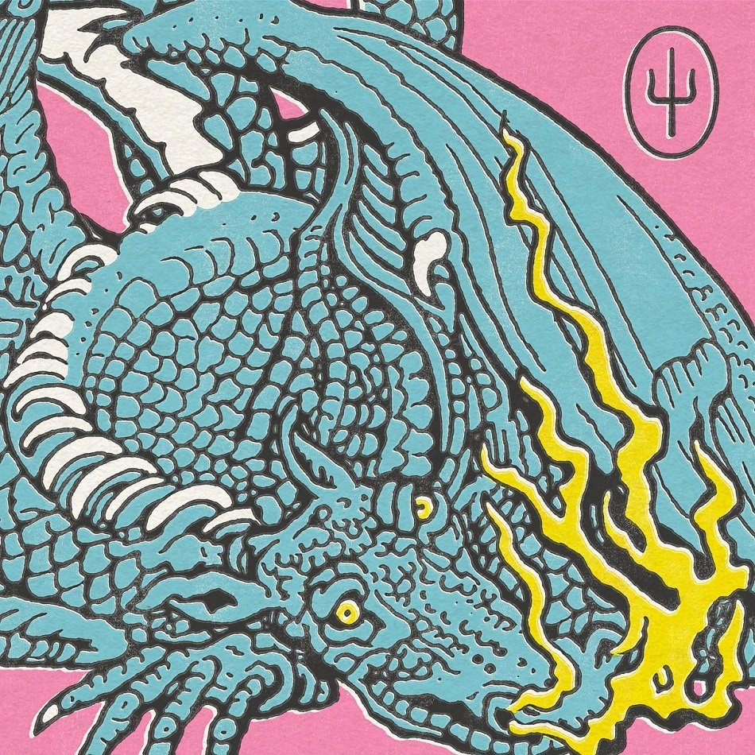

Członkowie Zespołu
| Muzyk | Instrument | Od kiedy w zespole | Zdjęcie |
|---|---|---|---|
| Tyler Joseph | Wokal, keyboard, gitara, perkusja | 2009 | |
| Josh Dun | Perkusja, wokal wspierający | 2011 |  |
Dyskografia

Vessel
Rok wydania: 2013

Blurryface
Rok wydania: 2015

Trench
Rok wydania: 2018

Scaled and Icy
Rok wydania: 2021

Clancy
Rok wydania: 2024